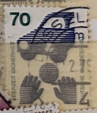
| SOURCE | TITLE| IMAGE MATCH | click to source page |
| Mystic Stamp | 1074//85 - 1971-74 Germany - Mystic Stamp Company |  |
| eBay | Germany, Postage Stamp, #1076, 1078-1079, 1082-1083 Mint NH, 1971 (AC) | eBay |  |
| Mystic Stamp | 1074//82 - 1971-74 Germany - Mystic Stamp Company | 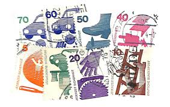 |
| eBay | Germany, Postage Stamp, #1075-1076, 1078-1080, 1082-1084 Mint NH, 1971 (AB) | eBay |  |
| eBay | AM0500) Berlin definitive stamps Mi. 402-411 + 453 MNH Cat €20, SC# 9N316-325 | eBay | 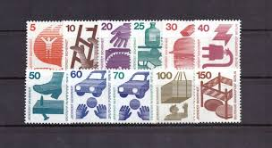 |
| Invaluable.com | Sold at Auction: Keith Haring, Keith Haring (Reading, Pennsylvania 1958 - 1990 New York, USA) (attributed to), 10 guilder note, signed and dated "86" (in felt-tip pen). | 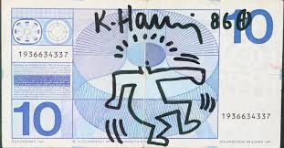 |
| eBay | 1974 Accident prevention,Unfall,Electricity,Electric device,Construction,Germany | eBay |  |
| Bank of England | Take a closer look - Paper banknotes | 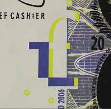 |
| eBay | Stamps FRD (FR.Germany) 1974 Mi MH20d I mZ with zählbalken (complete (10587975 | eBay |  |
| 50 Swiss francs with a new motif, the art, whether drawing on paper or digital artwork. I link the original reference banknote in the comments. Second Pic is Just a B/W Version : r/banknotedesigns | 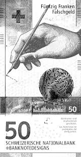 | |
| All Numis | Banknotes Catalog - List of banknotes for 1963-1990 Issue - 10 Kronor, Sweden - page 2 | 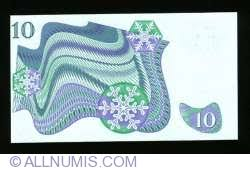 |
| 3rd Time pulling this guy!🔥 $90 : r/Currencytradingcards | 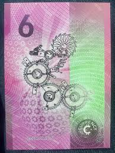 | |
| eBay | Stamp Germany, Scott # 1075c Mint NH complete booklet, precancelled | eBay |  |
| WTS : r/Currencytradingcards | 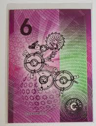 | |
| limitedrun.com | Marc O'Callaghan CCC-A49 "Akayah" - Coagularium | 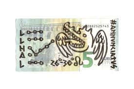 |
| Flickr | _DSC1779 | Luc Crul | Flickr | 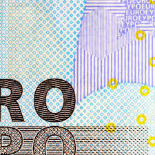 |
| I bought guldens from my grandma : r/Banknotes | 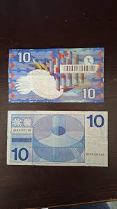 | |
| Leftover Currency | 20 Swiss Francs (Horace-Benedict de Saussure) - exchange yours | 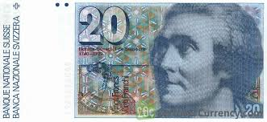 |
| brigin.lt | Copyright © 2004 By Scott Publishing Co. GERMANY — GERMAN OCCUPATION STAMPS 154 GERMAN OCCUPATION STAMPS | 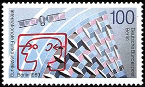 |
| eBay | Germany / Mh 9a Accident Prevention . MNH | eBay | 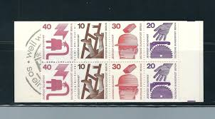 |
| allnumis.com | 100 Franci (19)75, 1976-1993 Issues - Switzerland - Banknote - 3389 | 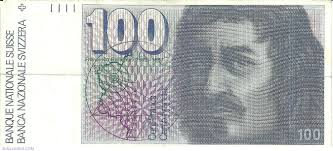 |
| Blogger.com | Poetry & Popular Culture: Notes on Poetry, Poetry on Bank Notes: A Guest Posting by P&PC's Netherlands Correspondent, Kila van der Starre | 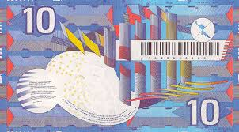 |
| eBay | 1975 Swedish Paper Money for sale | eBay | 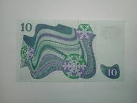 |
| europa.eu | Trainer's Guide | 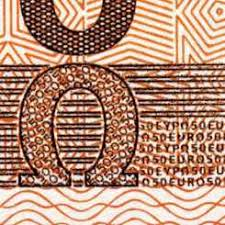 |
| Dreamstime.com | Bank of Mexico, Jaguar Symbol on One Thousand Pesos Banknote and Calculator, Financial Calculation Concept Stock Photo - Image of success, pesos: 275824800 | 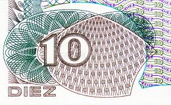 |
| Shutterstock | Close Faces On Bank Notes: Over 42,315 Royalty-Free Licensable Stock Illustrations & Drawings | Shutterstock | 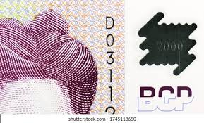 |
| Such a beauty Kievit is. : r/Banknotes | 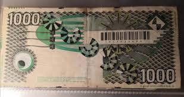 | |
| Leftover Currency | 10 Dutch Guilders (Frans Hals 1968) - Exchange yours for cash | 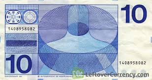 |
| Steven J. Murdoch | Software Detection of Currency | 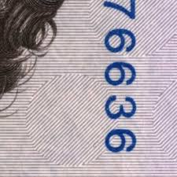 |
| Selling various dutch notes. : r/Banknotes | 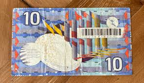 | |
| eBay | Berlin Mi Nr.453 70 Pf. paare postfrisch Ballspiel vor Auto 1973 | eBay | 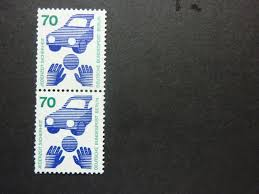 |
| DepositPhotos | Flag of falkland islands Stock Photos, Royalty Free Flag of falkland islands Images | DepositPhotos | 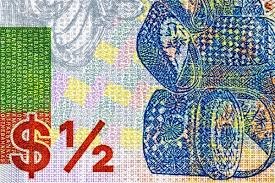 |
| Hello everyone, im a banknote collector from Kosovo and i wanted to share with you the beautiful banknote of your country! I also wanted to ask you, what could you have bought | 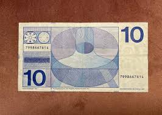 | |
| Adam Marshall Land & Auction | Belgium - Franc, France - Franc, Greece -Apaxmai (Drachma) & Lepta, Italy - Lire, Netherlands - Gulden, Portugal - Escudo And Spain - Peseta Banknotes - Adam Marshall Land & Auction, LLC | 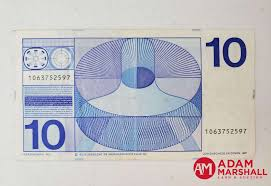 |
| TorFX | Australian dollar subdued amid shifting RBA rate hike bets - TorFX News | 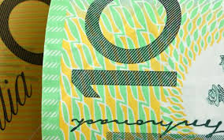 |
| DepositPhotos | Ancient egyptian money Stock Photos, Royalty Free Ancient egyptian money Images | DepositPhotos | 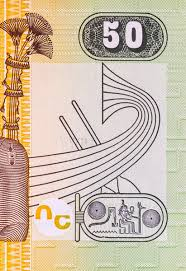 |
| eBay | Sweden - 10 Kronor - 1980 Fancy Serial Number Free Shipping | eBay | 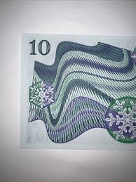 |
| Alamy | Paraguay money hi-res stock photography and images - Alamy | 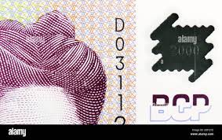 |
| eBay | 1975 Swedish Paper Money | eBay | 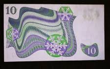 |
| eBay UK | Old Money 10 Tien Gulden Banknote de Nederlandsche Bank 1968 Amsterdam 25 April | eBay UK | 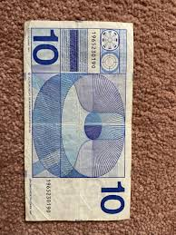 |
| Babylon Banknotes | SOLVAKIA - Babylon Banknotes | 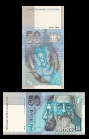 |
| triest-verlag.ch | Grande Dame of Graphic Design | 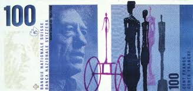 |
| Coin Community | Does Your $100 Cf98 Have An Odd Cut Bottom Right Corner? - Coin Community Forum | 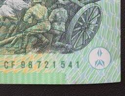 |
| | Katz Auction | Slovakia 20 Korun 2000 Commemorative issue | Katz Auction | 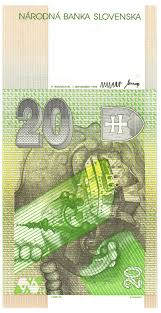 |
| Etsy | Buy Sweden 10 Kronor and 5 Kronor 1960s-1990s Colorful Lot of 2 Banknotes Online in India - Etsy | 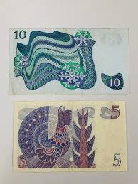 |
| eBay | Switzerland 20 Francs, 1992, P-55j.2, UNC | eBay | 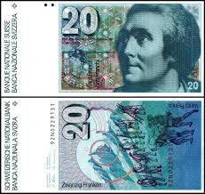 |
| Numista | 20 Francs (6th series) - Switzerland (1848-date) – Numista | 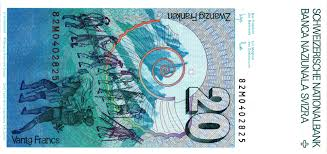 |
| eBay | Replacement Note Swedish Paper Money for sale | eBay | 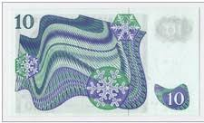 |
| kbcoins.in | Slovenia 50 tolars 1992 unc currency note - KB Coins & Currencies | 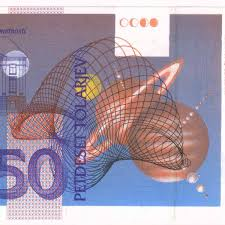 |
| Monetary Authority of Singapore | Singapore Polymer Notes: Security Features | 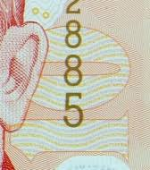 |
| 50 francos suizos con un nuevo motivo, el arte, ya sea dibujo en papel o arte digital. Les dejo el enlace del billete de referencia original en los comentarios. La segunda foto | 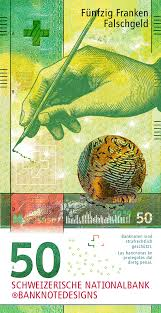 | |
| eBay | SWITZERLAND 20 Franken, 1978-1992 p55h UNC (TK16 122) | eBay | 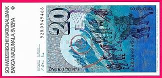 |
| eBay | 1975 Swedish Paper Money for sale | eBay | 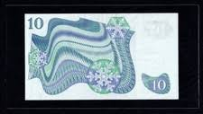 |
| eBay | ceskoslovensko 20 KORUN 1988 | eBay | 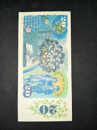 |
| Old-Cash | How and where can you exchange old Swiss francs? | 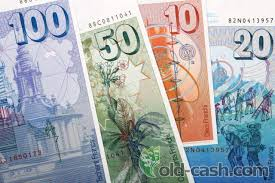 |
| | Katz Auction | Germany - FRG testnote 2000 Giesecke & Devrient 2000 | Katz Auction | |
| allnumis.com | 50 Franken (19)79 sign Dr. Edmund Wyss / Dr. Pierre Languetin, 1976-1993 Issues - Switzerland - Banknote - 3190 | |
| 50 ringgit is the largest Malaysian banknote in my collection. It is interesting that it differs in style from the rest of the banknotes of the series, probably because it was issued | ||
| cgbfr.net | 20 Francs SUISSE 1983 P.55e b90_7303 Банкноты | |
| Some of my personal favourites (PT. 2 reverses) : r/Banknotes |